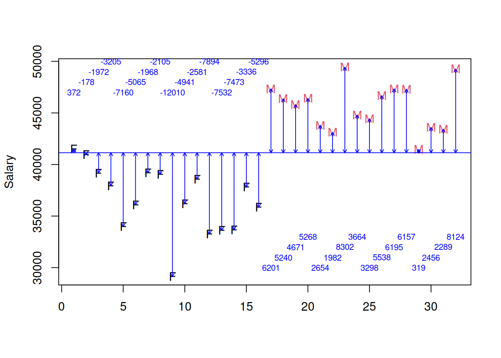
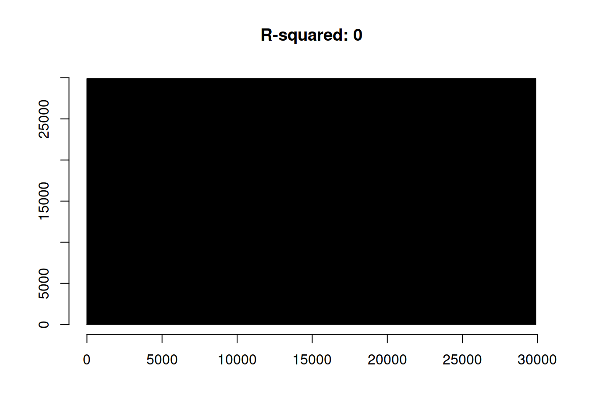
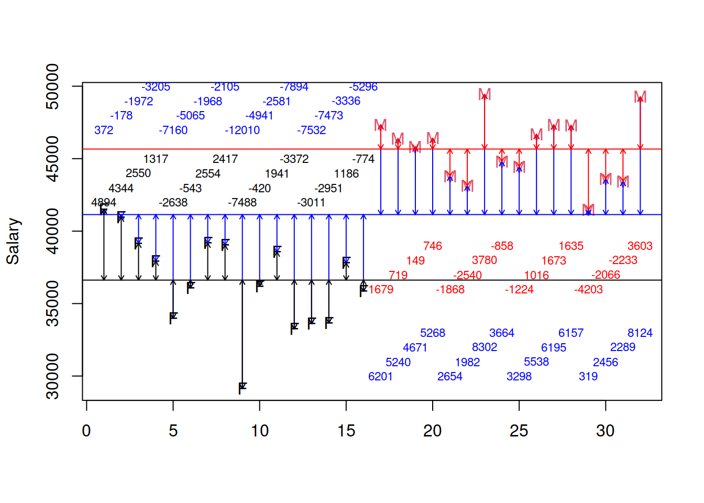
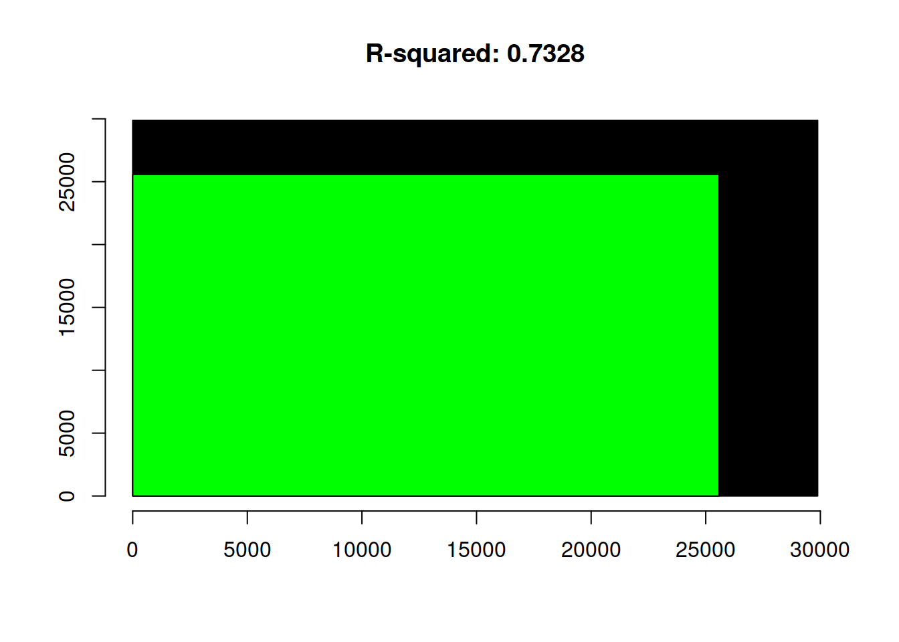
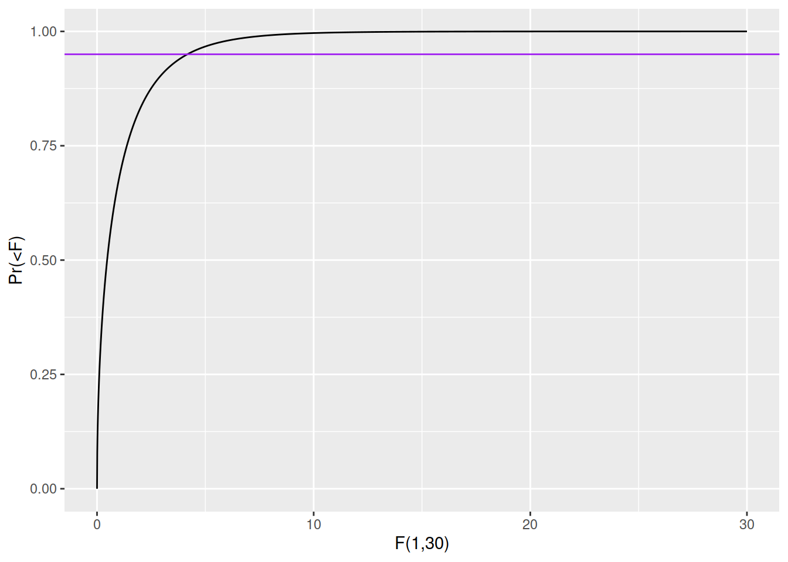

Regression models engage an exercise in variance accounting. How much of the outcome is explained by the inputs, individually (slope divided by standard error is t) and collectively (Average explained/Average unexplained with averaging over degrees of freedom is F). This, of course, assumes normal errors. This document provides a function for making use of the black box. Just as in common parlance, a black box is the unexplained. Let’s take an example.
options(scipen=10)
OregonSalaries <- structure(list(Obs = 1:32, Salary = c(41514.38701, 40964.06985,
39170.19178, 37936.57206, 33981.77752, 36077.27107, 39174.05733,
39037.372, 29131.74865, 36200.44592, 38561.3987, 33247.92306,
33609.4874, 33669.22275, 37805.83017, 35846.13454, 47342.65909,
46382.3851, 45812.91029, 46409.65664, 43796.05285, 43124.02135,
49443.81792, 44805.79217, 44440.32001, 46679.59218, 47337.09786,
47298.72531, 41461.0474, 43598.293, 43431.18499, 49266.41189),
Gender = structure(c(1L, 1L, 1L, 1L, 1L, 1L, 1L, 1L, 1L,
1L, 1L, 1L, 1L, 1L, 1L, 1L, 2L, 2L, 2L, 2L, 2L, 2L, 2L, 2L,
2L, 2L, 2L, 2L, 2L, 2L, 2L, 2L), .Label = c("Female", "Male"
), class = "factor")), .Names = c("Obs", "Salary", "Gender"
), class = "data.frame", row.names = c(NA, -32L))
black.box.maker <- function(mod1) {
d1 <- dim(mod1$model)[[1]]
sumsq1 <- var(mod1$model[,1], na.rm=TRUE)*(d1-1)
rt1 <- sqrt(sumsq1)
sumsq2 <- var(mod1$fitted.values, na.rm=TRUE)*(d1-1)
rsquare <- round(sumsq2/sumsq1, digits=4)
rt2 <- sqrt(sumsq2)
plot(x=NA, y=NA, xlim=c(0,rt1), ylim=c(0,rt1), main=paste("R-squared:",rsquare), xlab="", ylab="", bty="n", cex=0.5)
polygon(x=c(0,0,rt1,rt1), y=c(0,rt1,rt1,0), col="black")
polygon(x=c(0,0,rt2,rt2), y=c(0,rt2,rt2,0), col="green")
}OregonSalaries contains 32 observations: 16 males and 16 females. The mean of all salaries is 41142.433; let me put that in a plot in blue. Represented in equation form, we have:
\[ Salary_{i} = \alpha + \epsilon_{i} \]
I will use \(\alpha\) in lieu of \(\mu\) because this is the most common method for demarcating an intercept, a recurring concept for regression models, but the above says that the \(i^{th}\) person’s salary is some average salary \(\alpha\) [or perhaps \(\mu\) to maintain conceptual continuity] (shown as a solid blue line) plus some idiosyncratic remainder or residual salary for individual \(i\) denoted by \(\epsilon_{i}\) (shown as a blue arrow). Everything here is measured in dollars.
\[ Salary_{i} = 41142.433 + \epsilon_{i} \]
ORSalScale <- scale(OregonSalaries$Salary, scale=FALSE)
plot(y=OregonSalaries$Salary, x=c(1:32), ylab="Salary", col=as.factor(OregonSalaries$Gender), xlab="", pch=c(rep("F",16),rep("M",16)))
abline(h=mean(OregonSalaries$Salary), col="blue")
arrows(x0=c(1:32), x1=c(1:32), y1=OregonSalaries$Salary,y0=mean(OregonSalaries$Salary), col="blue", code=3, length=0.05)
text(x=seq(1,16), y=rep(c(47000,48000,49000,50000),4), labels = paste(ceiling(ORSalScale[c(1:16)])), cex=0.7, col="blue")
text(x=c(17:32), y=rep(c(30000,31000,32000,33000),4), labels = paste(ceiling(ORSalScale[c(17:32)])), cex=0.7, col="blue")
The total sum of squares can be represented as the sum of all the squared distances to the blue line; each vertical distance is demarcated with an arrow below in blue. By definition, the vertical distances would/will sum to zero. This sum to zero constraint is what consumes a degree of freedom; it is why the standard deviation has N-1 degrees of freedom. The distance from the point to the line is also shown in blue; that is the observed residual salary. It shows how far that individual’s salary is from the overall average. The total sum of squares: the total area of the black box in the original metric (squared dollars) is: 892955385. The length of each side is the square root of that area, e.g. 892955384.31 in dollars.
NB: If we recall that scale centers and scales data [z-score], we can see these calculations directly: The total sum of squares is:
sum(scale(OregonSalaries$Salary, scale = FALSE)^2)## [1] 892955384and the length of each side is:
sqrt(sum(scale(OregonSalaries$Salary, scale = FALSE)^2))## [1] 29882.36First, a regression. This is identical to a single sample t-test or radiant’s single mean.
mod1 <- lm(Salary~1, data=OregonSalaries)
summary(mod1)##
## Call:
## lm(formula = Salary ~ 1, data = OregonSalaries)
##
## Residuals:
## Min 1Q Median 3Q Max
## -12010.7 -3737.9 345.3 4812.8 8301.4
##
## Coefficients:
## Estimate Std. Error t value Pr(>|t|)
## (Intercept) 41142.4 948.8 43.36 <2e-16 ***
## ---
## Signif. codes: 0 '***' 0.001 '**' 0.01 '*' 0.05 '.' 0.1 ' ' 1
##
## Residual standard error: 5367 on 31 degrees of freedomThe average is 41142.4 dollars with a standard error of the mean of 948.8 dollars. The t value shows that the estimated average (41142.4) is 43.36 standard errors of the mean from zero; the Pr(>|t|) is the two-sided p-value. The standard deviation of all salaries (n-1=31) here is exactly the same as the residual standard error, 5367 dollars. There is a salary that is 12010.7 dollars smaller than the average and one that is 8301.4 dollars bigger than the average. The middle 50% of residual salaries are between 3737.9 dollars below and 4812.8 dollars above average.
## A Graphic
To represent the black box,let me draw it. The length of each side will be the square root of the black box; our total sum of squares is just under 900 million squared dollars so each side will be approximately 30000 dollars. The box appears below.
black.box.maker(mod1)
I want to compare the constant mean for both groups that we labeled to be \(\alpha\) with an alternative that includes some non-zero [probably positive given ubiquitous evidence of gender gaps in compensation] difference between the two averages – a difference in averages. First, a regression model. I will estimate the following regression:
\[ Salary_{i} = \alpha + \beta_{1}*Gender_{i} + \epsilon_{i} \]
This is related to what we had before; we had just implicitly assumed that the \(\beta_{1}\) was zero. We want to measure that \(\beta\); in this case, the difference between Male and Female.
What does the regression imply? That salary for each individual \(i\) is a function of a constant and gender. Given the way that R works, \(\alpha\) will represent the average for females and \(\beta\) will represent the difference between male and female average salaries. The \(\epsilon\) will capture the difference between the individual’s salary and the average of their group (the mean of males or females).
The picture will now have a red line and a black line and the residual/leftover/unexplained salary is now the difference between the point and the respective vertical line (red arrows or black arrows). What is the relationship between the datum and the group mean? The answer is shown in black/red.
resids <- residuals(lm(Salary~Gender, data=OregonSalaries))
plot(y=OregonSalaries$Salary, x=c(1:32), ylab="Salary", col=as.factor(OregonSalaries$Gender), xlab="", pch=c(rep("F",16),rep("M",16)))
abline(h=mean(OregonSalaries$Salary), col="blue")
abline(h=mean(subset(OregonSalaries, Gender=="Female")$Salary, na.rm=T), col="black")
abline(h=mean(subset(OregonSalaries, Gender=="Male")$Salary, na.rm=T), col="red")
arrows(x0=c(1:32), x1=c(1:32), y1=OregonSalaries$Salary,y0=mean(OregonSalaries$Salary), col="blue", code=3, length=0.05)
arrows(x0=c(1:16), x1=c(1:16), y1=OregonSalaries$Salary[c(1:16)],y0=mean(subset(OregonSalaries, Gender=="Female")$Salary, na.rm=T), col="black", code=3, length=0.05)
arrows(x0=c(17:32), x1=c(17:32), y1=OregonSalaries$Salary[c(17:32)],y0=mean(subset(OregonSalaries, Gender=="Male")$Salary, na.rm=T), col="red", code=3, length=0.05)
text(x=seq(1,16), y=rep(c(47000,48000,49000,50000),4), labels = paste(ceiling(ORSalScale[c(1:16)])), cex=0.7, col="blue")
text(x=c(17:32), y=rep(c(30000,31000,32000,33000),4), labels = paste(ceiling(ORSalScale[c(17:32)])), cex=0.7, col="blue")
text(x=seq(1,16), y=rep(c(42000,43000,44000,45000),4), labels = paste(ceiling(resids[c(1:16)])), cex=0.7, col="black")
text(x=c(17:32), y=rep(c(36000,37000,38000,39000),4), labels = paste(ceiling(resids[c(17:32)])), cex=0.7, col="red")
The sum of the remaining squared vertical distances is 238621277 and is obtained by squaring each black/red number and summing them. The amount explained by gender [measured in squared dollars] is the difference between the sums of blue and black/red numbers, squared. It is important to notice that the highest paid females and the lowest paid males may have more residual salary given two averages but the different averages, overall, lead to far less residual salary than a single average for all salaries. Indeed, gender alone accounts for:
sum(scale(OregonSalaries$Salary, scale = FALSE)^2) - sum(lm(Salary~Gender, data=OregonSalaries)$residuals^2)## [1] 654334108squared dollars. If we compare this to the total given above, we can calculate the amount explained or accounted for by knowing only the gender of the subject. This is known as \(r^{2}\) or r-squared.
1 - sum(lm(Salary~Gender, data=OregonSalaries)$residuals^2)/sum(scale(OregonSalaries$Salary, scale = FALSE)^2)## [1] 0.7327736Showing it graphically as squares.
mod2 <- lm(Salary~Gender, data=OregonSalaries)
black.box.maker(mod2)
The details of the regression estimates and the analysis of variance – the sums of squares – completes the rendering.
summary(mod2)##
## Call:
## lm(formula = Salary ~ Gender, data = OregonSalaries)
##
## Residuals:
## Min 1Q Median 3Q Max
## -7488.7 -2107.9 433.3 1743.9 4893.9
##
## Coefficients:
## Estimate Std. Error t value Pr(>|t|)
## (Intercept) 36620.5 705.1 51.94 < 2e-16 ***
## GenderMale 9043.9 997.1 9.07 0.000000000422 ***
## ---
## Signif. codes: 0 '***' 0.001 '**' 0.01 '*' 0.05 '.' 0.1 ' ' 1
##
## Residual standard error: 2820 on 30 degrees of freedom
## Multiple R-squared: 0.7328, Adjusted R-squared: 0.7239
## F-statistic: 82.26 on 1 and 30 DF, p-value: 0.0000000004223The average salary for Female is 36620.5 with a standard error of 705.1 [both in dollars]. The t-statistic shows that the probability that average Female salary is zero is tiny [t-value is almost 52]. The difference between Female and Male average salaries is 9043.9 dollars with a standard error of 997.1 dollars. The t-value of 9.07 suggests that the likelihood of no difference in average salaries [between male and female] is 0.000000000422. Males are almost certainly larger. In the summary of residuals, the extremes of residual salary are -7488.7 dollars (below) their Gender average and 4893.9 dollars above their Gender average. The residual standard error – the average residual given two estimates – is 2820 dollars, much smaller than the 5367 dollars with a common salary. Two further important elements to be considered from a regression.
confint(mod2)## 2.5 % 97.5 %
## (Intercept) 35180.542 38060.44
## GenderMale 7007.482 11080.28anova(mod1,mod2)## Analysis of Variance Table
##
## Model 1: Salary ~ 1
## Model 2: Salary ~ Gender
## Res.Df RSS Df Sum of Sq F Pr(>F)
## 1 31 892955384
## 2 30 238621277 1 654334108 82.264 0.0000000004223 ***
## ---
## Signif. codes: 0 '***' 0.001 '**' 0.01 '*' 0.05 '.' 0.1 ' ' 1First, what is the 95% confidence interval for female salaries? That is a confidence interval from a regression: 35180.542 to 38060.44 dollars. What is the difference between males and females? Males are 7007.482 to 11080.28 dollars higher with 95% confidence.
The last result is an ANOVA – analysis of variance – table. The RSS is the residual sum of squares – my black box. Each number in that table is explained above. The amount explained by gender is the Sum of Sq [Sum of Squares for the one degree of freedom]; the second RSS is the sum of squared residual salaries when averages differ by gender – the part that remains in black even after knowning Gender.
Under the null hypothesis that the predictor(s) explain no variation or that Gender is associated with no more than random variation can either use the t-statistic or F. The proper way is to say that mean salaries are independent of Gender and we can use sums of squares to examine this. Here is how. The average amount explained, per degree of freedom, is 654334108 squared dollars with one degree of freedom consumed. The average amount unexplained is 238621277 on 30 degrees of freedom [32 - 1 to start -1 for Gender] or 7954042.57. The ratio of average explained to average unexplained has an F distribution with two parameters, degrees of freedom 1 and 2. In this case, the F looks like:
library(tidyverse)
my.df <- data.frame(x=seq(0,30, by=0.01), y=pf(seq(0,30, by=0.01), 1, 30))
ggplot(my.df, aes(x=x, y=y)) + geom_line() + labs(y="Pr(<F)", x="F(1,30)") + geom_hline(yintercept=0.95, color="purple")
As the purple line shows, 95% of these F should be less than 4.17 [the purple line]. Put in English, once the average explained squares [averaging by degrees of freedom] to unexplained squares [averaging by degrees of freedom] is bigger than 4.17, it is unlikely that such a large quantity of squares could occur by chance and we are left to conclude that the average depends on gender. In our case, the F is
\[ \frac{654334108}{7954042.57} = 82.26\] The F that we have, 82.26 is literally off the charts; it is near certain that average salary depends on gender.